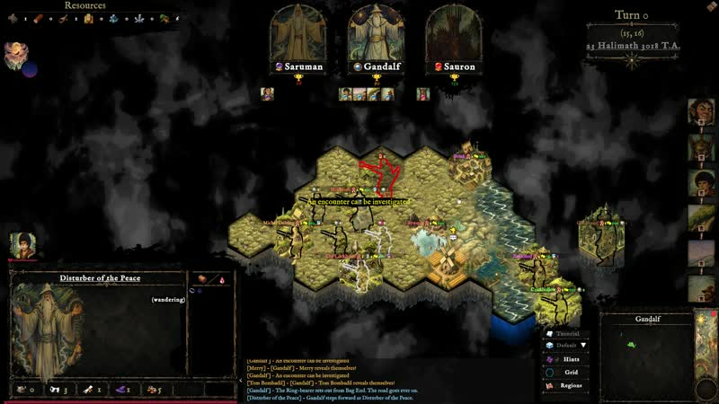
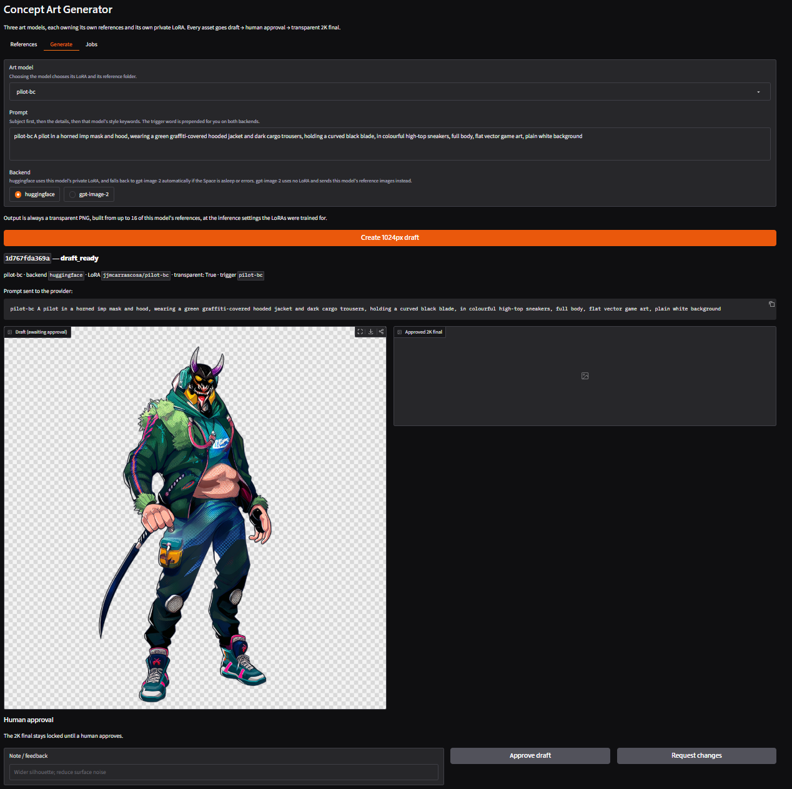
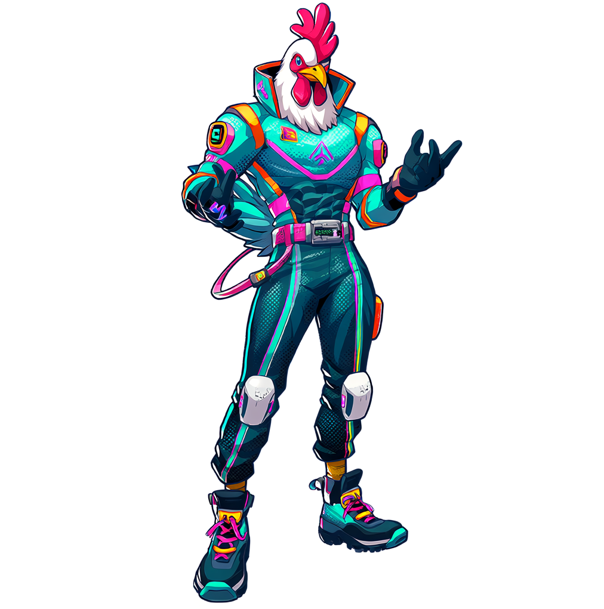

01
Runeboard
Strategy / cards
JUAN MARTINEZ · DEVELOPER
I build games, AI, and tools that bring them together. From gameplay and NPC minds to generative art and language.

01 / IN MOTION
A collection of gameplay moments.
Press play to explore each game, or open a GIF.
Strategy / cards
Gameplay reel
Gameplay reel
Gameplay reel
Gameplay reel
Gameplay reel
Gameplay reel
Gameplay reel
Gameplay reel
Gameplay reel
Gameplay reel
02 / CREATIVE INTELLIGENCE
Experiments at the intersection of AI,
creative workflows, and game development.

Agentic concept art generation for creative workflows.

Explore image customization with Qwen and LoRA.
An open-source NLP project for crafting the minds of video game characters.
03 / THE SOURCE
Every public repository, organized by focus.
Forks are collected separately.
Agentic Concept Art Generation
Qwen Image LoRA Studio
Hugging Face Gradio Space to train QLoRA on FLUX 1 dev
Mindcraft, the open-source NLP solution to craft the minds of your NPC characters for your videogames.
This is the repository for the Toxicity Classifier model based on XLM-Roberta, trained with Hugging Face Trainer API and using SHAP interpretability and optuna GridSearch and sharding.
Document Question Answering with Vector Stores, Langchain and LLM (backend)
Document Question Answering with Vector Stores, Langchain and LLM (frontend)
Front for Train, Extract, Annotate
Example of how to integrate Spark NLP using Hugging Face Hub with a demo on Gradio
TeaNLP - Pet project - Transform, Extract, Analyze using NLP graphs
Anonymization project.
OpenSource platform for downloading and querying Spanish Official Cadaster Registry (Catastro)
Gremlin / Tinkerpop/ Neo4j snippets
CSV and logstash files to import to ELK
A Huffpost (from KAGGLE) News Classifier using different statistical algorithms from SCIKIT-LEARN
DS3, Sekiro, and Elden Ring Randomizers
A .NET library for reading and writing FromSoftware file formats.
Helper library for writing mods of From Software games in C#
A Winforms tab control that allows user-drawn tabs.
Explore the project on GitHub.
This repository contains the ML For Games Course
This repo contains the syllabus of the Hugging Face Deep Reinforcement Learning Course.
OpenEDGAR (openedgar.io)
No projects match your search. Try another name or topic.
A BIT ABOUT ME
My background spans software engineering, linguistics, NLP, and game development. I’ve built AI systems and creative tools, and I love exploring how they can make games more expressive.
Find me on LinkedIn ↗{kind=link}
{kind=link}
{kind=link}
{kind=link}
{kind=link}
{kind=link}
{kind=link}
{kind=link}
{kind=link}
{kind=link}
{kind=link}